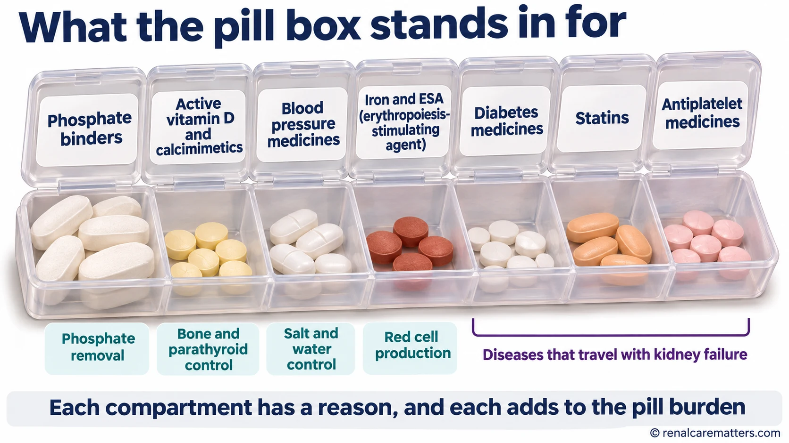
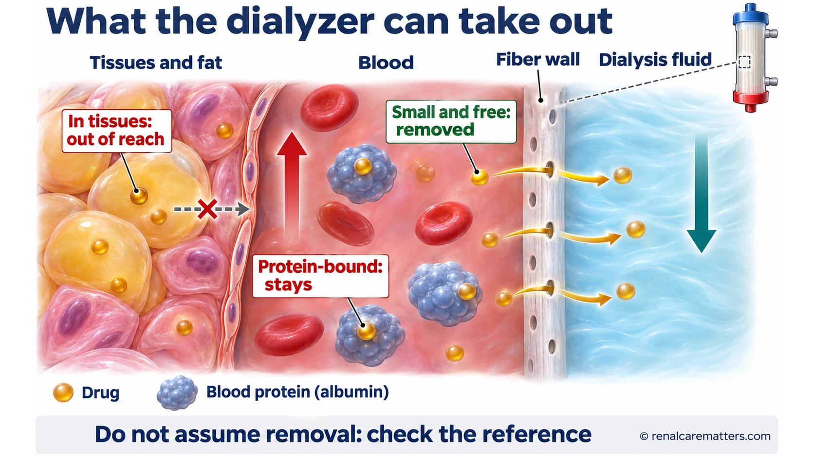
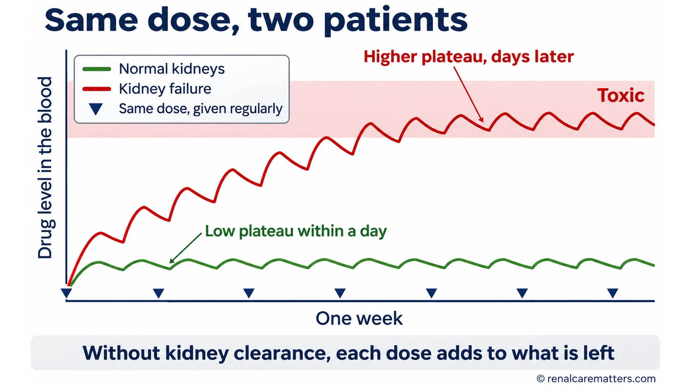
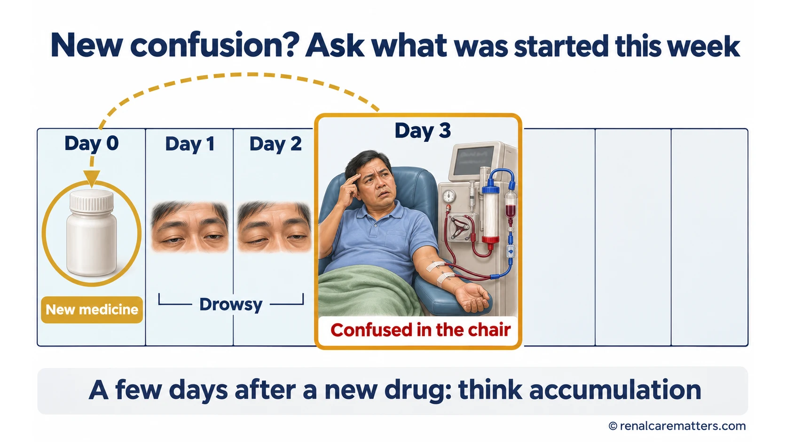

The medicines dialysis patients take, rules for prescribing, timing doses around a session, and the common prescriptions that cause harm.
PublishedNailathalaGipatikPepalwal:ReferencesMga SanggunianMga TinubdanReng Reperensya:15Audience: Physicians who cover hemodialysis shifts · attending nephrologists, medical directors, and head nurses who orient themRead timeOras ng pagbasaOras sa pagbasaOras ning pamamasa:
This module is study material for physicians on duty in hemodialysis units. It explains the reasoning behind common decisions; it is not a protocol. At the chairside, follow your unit’s protocol and ask the attending nephrologist for guidance. Doses and cut-off values are set by your unit. Every case is fictional.
Learning objectives
After this module you should be able to
Name the groups of medicines most dialysis patients take and the reason for each, and reconcile a medication list at the chair with the nurse and the patient.
Apply five questions before any prescription: is it needed, is it cleared by the kidney, is it removed by dialysis, when is it given relative to the session, and does it interact or duplicate.
Explain which drug properties make a drug removable by dialysis and why some doses are timed after the session.
Recognize the drugs that build up and cause confusion, seizures, falls, low blood sugar, or bleeding, and suggest safer directions to the attending nephrologist.
Look up a dose for kidney failure in your unit’s named reference and confirm it with the attending nephrologist or pharmacist before it is given.
Ask about over-the-counter, herbal, and imported products by generic ingredient, since brand names vary.
Pre-testBefore you read, answer the 8 self-assessment questions and note your score. After the module, select New set of questions and compare. The difference is what you learned; the questions you still miss are what to reread.
Start here
The big picture, in plain words
In plain wordsPicture a basin with a tap above and a drain below. Each dose of a medicine is water from the tap, and the kidneys are the drain. In kidney failure the drain is almost closed, so the same tap fills the basin higher with every dose. Dialysis opens a second drain, but only for a few hours, a few times a week.
The picture has a limit. Many drugs leave through the liver, and for them the drain is still open. Some are changed by the liver into active breakdown products, called metabolites, that the kidneys must then remove. And the dialysis drain is selective. It takes small molecules floating free in the blood and leaves those bound to protein or hidden in the tissues.
Figure 1 · Key terms for this module
Renal clearanceThe part of a drug’s removal that the kidneys perform. It falls toward zero in a patient without urine.
Active metaboliteA breakdown product of a drug that still acts on the body.
Half-lifeThe time for the blood level of a drug to fall by half. It lengthens when the route of removal is lost.
AccumulationThe rise in drug level when each dose arrives before the last one has cleared.
Protein bindingThe share of a drug attached to blood proteins such as albumin. Bound drug cannot cross the dialyzer membrane.
Volume of distributionHow widely a drug spreads into the body’s tissues. A large volume means little of it sits in the blood.
Module 4 explained why kidney failure changes drug handling. This module puts that knowledge to work at the chair. Most medicines a dialysis patient takes are needed and safe at the doses the nephrologist has set. A few common prescriptions build up quietly and first show themselves as confusion, a fall, a seizure, low blood sugar, or bleeding. Your work is to know those few, to ask five questions before any new prescription, and to bring the list to the attending nephrologist before harm, not after it.
Opening case · fictional
Case: Ten medicines, three doctors
Mrs. Erlinda “Linda” Pascual, 71, has dialyzed on Mondays, Wednesdays, and Fridays for two years through a right upper-arm fistula. She has diabetes and passes almost no urine. Today is Wednesday. At 2:30 p.m., in hour two, her daughter tells you that her mother has been “sleepy and talking strangely” since Monday.
Last week a clinic doctor gave her gabapentin for burning feet. On Saturday an urgent-care doctor started valacyclovir for shingles on her left chest. She also takes glibenclamide that a relative bought for her, amlodipine, calcium carbonate with meals, and a cough syrup from a drugstore. None of the doctors knew about the others’ prescriptions.
The nurse, Ms. Grace Alcantara, has checked the capillary glucose, laid out the medicine bag on a tray, and called you. Illustrative bedside values, not targets: blood pressure 132/74 mm Hg, heart rate 80 per minute, oxygen saturation 98%, capillary glucose 68 mg/dL, temperature 37.0 °C. Mrs. Pascual knows her daughter but not the day of the week. Her hands twitch now and then.
Before reading on, decide:
Which drugs on this list could explain her confusion, and in what order would you raise them?
What do you do now for the low glucose, under protocol, and what do you tell the attending nephrologist?
What reference do you use to check doses, and who decides whether to stop, change, or remove a drug with extra dialysis?
Keep your answers in mind. The lesson gives you what you need, and the case review near the end shows one sound response.
Lesson · part 1
What is in the pill box, and why
Picture a weekly pill box filled from prescriptions in three doctors’ handwriting. Each compartment has a reason, and most stand in for a job the kidneys used to do.

Figure 2. Most of the pill box stands in for jobs the kidneys used to do. Each compartment has a reason, and each adds to the daily pill burden.
Healthy kidneys remove phosphate, activate vitamin D, balance salt and water, and make the hormone that drives red cell production. When they fail, each lost job leaves a gap, and a medicine fills it. Other medicines treat the diseases that travel with kidney failure, such as diabetes and heart disease.
Group
The kidney job or problem it answers
Module
Phosphate binders
Phosphate is no longer excreted
21
Active vitamin D and calcimimetics
Vitamin D is no longer activated, and the parathyroid glands overwork
21
Blood pressure medicines
Salt and water are retained
14
Iron and erythropoiesis-stimulating agents (ESA)
Too little erythropoietin, and iron losses
21
Diabetes medicines
The commonest cause of kidney failure
22
Statins and antiplatelet medicines
Heart and vessel disease
4, 15
Chiu and colleagues counted the daily pills of 233 patients in three United States dialysis units. The median was 19 pills a day, and a quarter of patients took more than 25. Phosphate binders made up about half, and 62% of patients did not take their binders as prescribed. A higher pill burden was associated with lower physical quality of life.1 The study was cross-sectional, so it cannot show that the pills caused the poorer quality of life.
Worked example C: a pill count at the chair (illustrative). Calcium carbonate, 3 tablets with each of 3 meals = 9. Amlodipine = 1. Glibenclamide = 2. Gabapentin = 3. Valacyclovir = 3. Other tablets = 4. Total = 9 + 1 + 2 + 3 + 3 + 4 = 22 tablets a day, against a published median of 19.1 What it tells you: the burden is high, and two drugs are new this week. What it does not tell you: which drugs are safe or which can stop. That is a conversation with the attending nephrologist.
The Kidney Disease: Improving Global Outcomes (KDIGO) 2024 guideline on chronic kidney disease (CKD) advises a thorough medication review periodically and at transitions of care, to check adherence, continued need, and interactions, noting that people with CKD often see several specialists. KDIGO issues this as an ungraded practice point.2 A hospital discharge, a visit to another doctor, and a trip to a drugstore are all transitions.
Figure 3 · Reconcile at the chair
Gather every sourceThe patient’s bag, the chart list, the latest discharge summary, and outside prescriptions.
Write each drug by generic nameStrength, frequency, prescriber, and start date.
Ask what is not in the bagDrugstore products, herbal remedies, and medicines bought by relatives.
Mark duplicates and new drugsTwo drugs of one class, and anything started or changed in the past week.
ReportGive the list to the attending nephrologist. Do not stop or start drugs outside protocol.
RememberThe list in the chart is a guess until you have seen what is in the patient’s bag.
Lesson · part 2
Five questions before you write
Treat every new prescription for a dialysis patient as a gate with five bars. The drug passes only when each bar has an answer. Most of the harm in this module would not pass it.
Figure 4 · Five questions before any prescription
1. Is it needed?Name the problem. Ask whether a non-drug step or a drug already on the list would do.
2. Is it cleared by the kidney?Check the drug and its active metabolites. If either leaves through the kidneys, it builds up without a dose change.
3. Is it removed by dialysis?Check the reference. The next section explains what decides removal.
4. When is it given?Doses of removed drugs are usually given after the session, as the order and the reference state.
5. Does it interact or duplicate?A second sedative, a second drug that lowers glucose, a second blood thinner, or one drug under two brand names.
Why the usual kidney numbers do not apply
KDIGO advises that clinicians consider glomerular filtration rate (GFR) when dosing drugs cleared by the kidneys, and monitor drug levels when indicated for drugs with a narrow therapeutic window. Both are ungraded practice points.2 What follows for a dialysis patient is practical inference, not a guideline statement. Equations that estimate GFR from creatinine assume a steady level. In dialysis, creatinine rises between sessions and falls during them, so an estimated GFR (eGFR) or a Cockcroft-Gault clearance reflects the dialysis schedule, not the kidneys. Use the reference’s line for hemodialysis. A patient with good residual urine output, as Module 3 described, has some kidney clearance left, and that judgment belongs to the attending nephrologist.
Where to look up a dose
What it gives you
Its limit
Your unit’s adopted dosing reference
A hemodialysis line, often with timing
References differ for some drugs, because the data are small studies. Use one, and name it in the record
The product label
Kidney dosing, if it was studied
Many labels say only “not studied in dialysis”
The pharmacist
A check of dose, interactions, and duplicates
Needs the full reconciled list
The attending nephrologist
The decision for this patient
Needs a clear report from you
The site’s Renal Medication Safety calculator screens a list for kidney cautions. Use it to prepare your call, not to choose a dose. KDIGO also encourages working with pharmacists on complex regimens, as a practice point.2
Some physicians raise a dose because “dialysis will remove it.” This is often wrong. Many drugs are barely removed, and those that are removed still accumulate across the long gaps between sessions.
Stop and callStop and call the attending nephrologist before any new antibiotic, anticoagulant, antiseizure drug, opioid, or sedative is given to a dialysis patient. Bring the reconciled list and the line from your unit’s reference.
RememberFive questions, every time: needed, kidney-cleared, removed by dialysis, timing, and interactions.
Lesson · part 3
What the dialyzer takes out
Picture a garden sieve. Small loose stones fall through. Large stones stay on top. Stones stuck to a big rock stay with the rock, and stones buried in the garden beds never reach the sieve.
The picture has a limit. Removal also depends on blood and dialysis fluid flow, the membrane’s pores, and the session length, as Module 5 explained. Here the question is narrower: which features of a drug decide whether it crosses.

Figure 5. A drug leaves through the dialyzer when it is small, unbound, and mostly in the blood. Protein binding and a large volume of distribution keep it out of reach.
A drug crosses the membrane only as a free molecule in plasma water. That one fact explains the properties a standard dialysis text lists.3
Property
Favors removal
Limits removal
Why
Molecular size
Small
Large
Large molecules diffuse slowly and may not fit the pores
Protein binding
Little
Strong
The protein cannot cross, so drug riding on it stays
Volume of distribution
Mostly in the blood
Spread into tissues and fat
The dialyzer sees only the blood
Water solubility
Water-soluble
Fat-soluble
Fat-soluble drugs sit in tissues and bind proteins
Two drugs show the extremes. Gabapentin is small, barely protein-bound, and leaves the body almost entirely in the urine. Dialysis removes it well, yet it still builds up, because in an anuric patient dialysis is its only way out. Apixaban, an anticoagulant, is largely protein-bound. In a pharmacokinetic study of seven hemodialysis patients, a session removed only 4% of it.4 Seven patients is a small sample, but the finding fits the drug’s properties.
Why some doses are given after the session
A dose of a removed drug given before dialysis is partly lost in the dialysis fluid. Given after the session, the full dose stays until the next one. After a session, drug held in the tissues can also move back into the blood, so the level rises again. This rebound is one reason a level drawn at the end of a session can mislead.
Pattern in the order
Why it exists
How you confirm it
“Give after dialysis”
The session removes the drug
The hemodialysis line in your reference
A supplemental dose after the session
Removal is large enough to underdose the patient
The reference, the pharmacist, the attending
A level before the next dose
A narrow range between effect and harm, as with vancomycin
The order and the pharmacist
No timing instruction
The drug is barely removed, or no one has checked
Ask. Assume neither way
How much of a dose remains
When the kidneys are the main route out, losing them lengthens the half-life, and much more of yesterday’s dose is still present today. The arithmetic below uses first-order elimination, the pattern most drugs follow at usual doses (Module 4).
Worked example A: fraction of a dose remaining (illustrative values, not drug data). Formula (first-order elimination): fraction remaining after time t = (1/2)t ÷ half-life Suppose a half-life of 6 hours with normal kidneys and 30 hours in kidney failure. After 24 hours, normal kidneys: (1/2)24 ÷ 6 = (1/2)4 = 1/16, about 6% left. After 24 hours, kidney failure: (1/2)24 ÷ 30 = (1/2)0.8 = about 0.57, or 57% left. A second daily dose lands on more than half of the first. A steady level takes about four to five half-lives: about one day with normal kidneys, five to six days in kidney failure. What this tells you: why toxicity appears days after a drug is started. What it does not tell you: a dose.
RememberDo not assume a drug is removed by dialysis. Check the reference, and give removed drugs after the session as ordered.
Lesson · part 4
The drugs that build up and hurt the brain
Picture a bucket under a dripping tap with its drain blocked. Nothing happens for a while. Then, days later, it overflows. In a dialysis patient the first overflow is usually in the brain: drowsiness, confusion, jerking of the limbs, or a fall.
The picture has a limit. The brain is not a passive floor. Kidney failure is thought to make it more sensitive, through retained uremic toxins and changes in the barrier between blood and brain. A level a healthy person tolerates may tip a dialysis patient over.

Figure 6. The same dose, two patients. Without kidney clearance the half-life lengthens, each dose adds to what is left, and the plateau is higher and arrives days later.
Worked example A showed why the level climbs for days before it settles. That timing is your best clue at the chair. New confusion a few days after a new prescription points to the drug until shown otherwise.

Figure 7. New confusion a few days after a new prescription is the usual pattern of drug accumulation. Ask what was started this week.
Gabapentin and pregabalin
These drugs treat nerve pain, itch, and restless legs, and the kidneys clear them. Ishida and colleagues studied 140,899 United States hemodialysis patients in the national registry. In 2011, 19% received gabapentin and 4% pregabalin. The highest gabapentin dose category was associated with 50%, 55%, and 38% higher hazards of altered mental status, falls, and fracture. Even the lowest doses were associated with 31% to 41% higher hazards of altered mental status. Pregabalin was associated with up to 51% and 68% higher hazards of altered mental status and falls.5 The study was observational. Patients given these drugs may differ in ways the data cannot capture.
Among 74,084 older adults in Ontario with CKD not on dialysis, starting at a higher dose was associated with more hospital visits for encephalopathy, falls, fracture, or slowed breathing within 30 days: 1.9% versus 1.5%. The absolute difference was 0.40%, about one extra event for every 250 patients.6 Dialysis patients, whose clearance is lower still, were excluded.
Opioids
From 2006 to 2010, more than 60% of United States dialysis patients filled at least one opioid prescription each year, and about 20% had a chronic supply. In 153,758 patients, opioid prescription was associated with death, stopping dialysis, and hospitalization, and higher doses with more deaths.7 The authors state that causation cannot be inferred, because an opioid may mark a sicker patient. Some opioids, such as morphine, also have active metabolites that the kidneys clear.
Cefepime
Cefepime, a broad-spectrum antibiotic, crosses into the brain and at high levels blocks the calming signal of gamma-aminobutyric acid (GABA). In a systematic review of 135 published cases, 80% of patients had kidney dysfunction. Forty-eight percent had been overdosed for their kidney function, yet 26% developed toxicity despite appropriate dosing. Of those who had an electroencephalogram (EEG), 25% showed nonconvulsive status epilepticus, a seizure state without visible jerking.8 A second review of 119 cases found a median onset of four days and improvement in 97.5% after dose reduction or stopping the drug.9 A meta-analysis of 23 studies found an odds ratio of 10.06 for neurotoxicity with an eGFR below 30 mL/min/1.73 m².10 These are case collections and observational data. They describe the pattern well but cannot give a true rate.
Acyclovir and valacyclovir
Valacyclovir becomes acyclovir in the body, and the kidneys excrete it. In 119 published cases of neurotoxicity, 83.3% had kidney impairment and 57.1% had kidney failure. In 59.7% the dose exceeded the kidney-adjusted recommendation. Symptoms began a mean of 3.1 days after starting. Stopping the drug was the main treatment, and some patients needed extra dialysis.11
Worked example B: the five questions for valacyclovir (decision walk-through). 1. Needed? Shingles in an older adult: an antiviral is reasonable. 2. Kidney-cleared? Yes, as acyclovir. 3. Removed by dialysis? Partly. The reference gives a hemodialysis line. 4. Timing? After the session on dialysis days, as the reference states. 5. Interactions? Gabapentin adds a second drug that can cloud the brain. Outcome: you read the hemodialysis line in your unit’s reference, you do not write the prescription, and you call the attending nephrologist, noting that most published neurotoxicity followed doses above the kidney-adjusted recommendation.11 What this does not tell you: the dose.
Baclofen
Baclofen, a muscle relaxant, leaves through the kidneys. Wolf and colleagues described a hemodialysis patient whose baclofen toxicity reversed with urgent hemodialysis, and they recommend avoiding the drug in severe kidney dysfunction and on dialysis.12 This is the authors’ recommendation from a case report and review, not a graded guideline.
Module 18 covers the confused patient. This table supplies the drug suspects.
Stop and callStop and call the attending nephrologist when you suspect drug toxicity: new confusion, jerking of the limbs, a seizure, low blood sugar, unexpected sleepiness, or bleeding. Some toxicities are treated with extra dialysis, which only the attending nephrologist orders. Follow your unit’s protocol for the first minutes while you call.
RememberWhen a dialysis patient becomes confused, ask what was started or changed this week.
Lesson · part 5
Metformin, sulfonylureas, and anticoagulants
Some drugs are safe at one level of kidney function and unsafe when the kidneys are gone. The drug has not changed. Its route out has closed. Three groups matter most because they arrive on lists written by doctors who may not know the patient dialyzes.
Metformin
Metformin leaves the body unchanged in the urine, and at high levels it pushes the body toward lactic acid production. Without kidneys it accumulates. KDIGO 2022 recommends metformin for type 2 diabetes with CKD and an eGFR of 30 mL/min/1.73 m² or more, graded 1B.13 The consensus of the American Diabetes Association (ADA) and KDIGO states that “metformin is contraindicated with eGFR <30 mL/min/1.73 m2 and with dialysis treatment.”14 The site’s Metformin Safety in CKD calculator shows the cutoff.
Sulfonylureas and insulin
Healthy kidneys break down part of the body’s insulin and make some glucose. When they fail, insulin lasts longer and glucose reserves are smaller. Glibenclamide, a long-acting sulfonylurea, drives insulin release, and its active metabolites are cleared partly by the kidneys. Low glucose can then last for hours and return after treatment. The ADA-KDIGO consensus names advanced CKD as a risk factor for hypoglycemia and advises careful use of insulin and sulfonylureas.14 The American Geriatrics Society (AGS) Beers Criteria advise avoiding sulfonylureas as first- or second-line therapy in adults 65 and older unless there are substantial barriers to safer agents, and prefer short-acting agents over long-acting ones such as glibenclamide, a strong recommendation with high-quality evidence for hypoglycemia.15 Module 22 covers diabetes regimens, and Module 18 covers low glucose in the chair.
Anticoagulants
The direct oral anticoagulants (DOAC) differ in how much they depend on the kidneys. Apixaban depends on them least, yet it accumulates in hemodialysis. In the study by Mavrakanas and colleagues, apixaban 2.5 mg twice daily gave exposure similar to the standard dose with normal kidneys, while 5 mg twice daily raised trough levels above the 90th percentile for that dose.4 These doses are study findings, not instructions. The study measured drug levels, a surrogate, in seven patients (five on the higher dose), not strokes or bleeding. The right dose in hemodialysis is still debated; Module 19 covers anticoagulants and bleeding. The site’s DOAC Renal Dosing calculator shows labeled kidney dosing to prepare your call.
Found on the list
Why the risk changes
What the source says
What you do
Metformin
Excreted unchanged; accumulates
Contraindicated with dialysis, consensus statement14
Flag it the same day
Glibenclamide
Longer action, active metabolites, smaller glucose reserve
Stop and callStop and call the attending nephrologist the same day when metformin, a long-acting sulfonylurea, or an outside anticoagulant appears on a dialysis patient’s list. Call at once if there is low glucose or bleeding, after starting treatment under your unit’s protocol.
RememberA drug that was right before dialysis can be wrong after it. Read every outside prescription as if it were new.
Lesson · part 6
Antibiotics and pain relief: the common requests
You will hear two requests most often: “he needs an antibiotic” and “she needs something for the pain.” Both are reasonable, and both carry the drugs most often linked to harm.
Antibiotics: the pattern, not the dose
The pattern follows from Module 4. The first dose fills the volume of distribution, which kidney failure does not shrink, so it is usually full. Later doses replace what is cleared, and with the kidneys gone less is cleared, so they shrink or spread out.
Step
What it means
Who sets it
Loading dose
Usually a full first dose
The reference and the attending nephrologist
Maintenance
Smaller, less often, or after each session
The reference and the attending nephrologist
Timing
After the session for drugs dialysis removes
The order
Levels
Vancomycin and aminoglycosides are dosed by measured levels
The attending nephrologist and the pharmacist
Cultures come before the first dose when the protocol allows. Module 17 covers fever and bloodstream infection, and the reading on antibiotic stewardship explains why the narrowest suitable drug is preferred.
Pain relief
Nonsteroidal anti-inflammatory drugs (NSAIDs) such as ibuprofen reduce blood flow to the remaining kidney tissue, raise potassium, retain salt and water, and add to bleeding risk. The Beers Criteria advise avoiding chronic use of most oral NSAIDs in older adults, and avoiding ketorolac and indomethacin, both strong recommendations on moderate-quality evidence.15 Paracetamol is the usual first drug because the liver, not the kidney, clears it. Opioid choice and dose belong to the attending nephrologist, weighed against the harms in the registry data.7
The Beers Criteria also list drugs to avoid or reduce by kidney function: gabapentin and pregabalin for dose reduction below a creatinine clearance of 60 mL/min, and baclofen for avoidance below an eGFR of 60 or on chronic dialysis, each strong on moderate-quality evidence; tramadol for reduction or avoidance below a creatinine clearance of 30 mL/min, weak on low-quality evidence.15 These cutoffs describe the criteria, not a dose, and a creatinine clearance means nothing in an anuric patient. The criteria were built for older adults in the United States and support, not replace, judgment. Tramadol with a gabapentinoid stacks two sedating, kidney-dependent drugs, a combination the Beers Criteria say to avoid (strong, moderate-quality evidence).15
Figure 8 · Pain relief for a dialysis patient
Ask and examineA new pain may be a fracture after a fall, an infected access, or the heart.
Non-drug measuresPosition, warmth, gentle movement, and treating the cause.
ParacetamolThe usual first drug, as your unit’s protocol allows.
Avoid repeated NSAIDsEspecially with residual urine, high potassium, or bleeding risk.
Anything strongerOpioids, gabapentinoids, and muscle relaxants are chosen and dosed by the attending nephrologist.
Write it downThe indication, the reference used, and the advice received.
RememberWrite no new antibiotic or opioid without the attending nephrologist’s instruction, and record the indication and the reference you used.
Lesson · part 7
Over-the-counter, herbal, and imported products
Every home has a medicine cabinet you never see: the drugstore cough syrup, a neighbor’s antacid, a cousin’s herbal tea, capsules a relative sent from abroad. None appear in the chart unless someone asks.
KDIGO advises reviewing and limiting over-the-counter medicines and dietary or herbal remedies that may harm people with CKD, an ungraded practice point.2 The reason is physiology. Potassium, magnesium, aluminum, and phosphate are normally excreted by the kidneys. Without them, a product harmless to a neighbor can build up in a dialysis patient.
Brand names change between drugstores and countries. Ask the family to bring the box, and read the generic ingredients.
Product
Ingredient to look for
Why it matters
Pain relievers
Ibuprofen, mefenamic acid, naproxen, alone or with paracetamol
Loss of residual function, high potassium, bleeding
Cough and cold mixtures
Chlorphenamine and other sedating antihistamines; phenylephrine
Drowsiness and confusion; higher blood pressure
Salt substitutes
Potassium chloride
A dangerous rise in potassium (Module 18)
Antacids
Magnesium and aluminum salts
Both accumulate without kidney excretion
Laxatives and enemas
Phosphate and magnesium salts
A load the patient cannot excrete
Herbal products, imported “kidney cleansers”
Often unknown
Uncertain content and strength; possible interactions
Ask without judgment. Many patients buy these products because a pain or cough went unaddressed, or because the drugstore is cheaper. A patient who feels scolded stops telling you. Record each product by ingredient, and report anything on the table to the attending nephrologist.
RememberAsk about the cabinet you cannot see at every reconciliation, and record what you find by ingredient.
On the floor
Real situations: problems and solutions
These are fictional but typical. For each one, cover the answer, decide what you would do, then compare. Where a step depends on local rules, your unit’s procedure and your supervisor’s direction come first.
The jerking hands after discharge
What you see
A man returns to the unit two days after a hospital stay for pneumonia. His discharge list includes cefepime given after each session. In hour one he is drowsy, his speech is slow, and his hands jerk now and then.
What is likely going on
Cefepime neurotoxicity is likely. Most reported cases had kidney dysfunction, onset is usually within a few days, and some patients have nonconvulsive seizures without obvious convulsions.
What to do
Check glucose and vital signs per protocol. Call the attending nephrologist now with the drug, the dose, the timing, and the findings. Ask about the next steps for the antibiotic, an assessment of the brain, and whether transfer is needed.
Why it matters
Toxicity can occur even at a kidney-adjusted dose. Recognizing it early lets the attending stop or change the drug before a seizure.
“Write him something for the cellulitis”
What you see
At the end of a session, a family member asks you to prescribe an antibiotic for redness on a patient’s leg. The patient has no fever and the access looks clean.
What is likely going on
A skin infection is possible, but the drug, the dose, and the timing around dialysis need the reference and the attending nephrologist.
What to do
Examine the leg and mark the edge of the redness. Look up the hemodialysis line in your unit’s reference. Call the attending nephrologist with your findings before any prescription is written.
Why it matters
A full maintenance dose of a kidney-cleared antibiotic accumulates over days. A call now prevents a toxicity later.
The new anticoagulant from the cardiologist
What you see
A woman with atrial fibrillation brings a new prescription for a direct oral anticoagulant at the full standard dose. She mentions that her gums bled this morning.
What is likely going on
Anticoagulants accumulate in kidney failure, and apixaban is barely removed by dialysis. A full dose produced supratherapeutic levels in a small hemodialysis study.
What to do
Check the needle sites and look for other bleeding. Report the drug, the dose, the prescriber, and the bleeding to the attending nephrologist today. Do not change the dose yourself.
Why it matters
Bleeding is the main harm of anticoagulants. The dose decision needs the attending and, often, the cardiologist.
The neighbor’s antacid
What you see
A man has been taking an antacid suspension every night for heartburn. His predialysis laboratory results show a high magnesium level, and he feels weak.
What is likely going on
Many antacids contain magnesium or aluminum salts, which the kidneys normally excrete. Without kidney function, they accumulate.
What to do
Read the label and record the ingredients. Report the product and the laboratory result to the attending nephrologist, and ask the patient to bring every product he takes.
Why it matters
Over-the-counter products are invisible in the chart. Asking by ingredient finds them.
Two doctors, two sedatives
What you see
An older woman on hemodialysis has tramadol from an orthopedic surgeon and pregabalin from a neurologist. She has fallen twice this month and is drowsy in the chair.
What is likely going on
Two sedating drugs that both depend on the kidneys are stacked. Gabapentinoids have been associated with falls and altered mental status in hemodialysis patients.
What to do
Reconcile her full list with start dates and prescribers. Report the combination and the falls to the attending nephrologist and ask for a review. Check her for injury from the falls.
Why it matters
Each prescriber saw one problem. The physician on duty is often the first to see the whole list.
Field notes
Ask the family to bring every medicine bottle and box to the next session. The bag tells you more than the chart.
Write every drug by its generic name. Brand names change between drugstores, and duplicates hide behind them.
When a patient is newly confused, ask two questions first: what is the glucose, and what was started this week.
Keep your unit’s dosing reference at the nurses’ station, and name it in the record whenever you use it.
When an outside doctor starts a medicine, send a note with the patient that says the patient is on hemodialysis.
Case review
Back to the case: Ten medicines, three doctors
Which drugs could explain her confusion, and in what order? Start with what you can measure and reverse in minutes. Her glucose is low, and glibenclamide bought without a prescription is the likely cause. Low glucose alone may not explain two days of confusion, so go on. Valacyclovir is next. It started on Saturday and the confusion on Monday, matching the onset of a few days in published cases, most of which involved kidney failure and unadjusted doses.11 The twitching fits too. Gabapentin is third: started last week, cleared by the kidneys, and associated with altered mental status even at low doses in registry data.5 The two drugs add to each other. The cough syrup is fourth until you read its label. Drugs are not the only explanation. Shingles can spread to the brain, and Module 18 lists potassium, stroke, and infection. Raise the drugs alongside those causes.
What do you do for the low glucose, and what do you tell the attending? Ask Ms. Alcantara to treat it now by the route and amount in your unit’s hypoglycemia protocol and to recheck it as directed. A long-acting sulfonylurea can lower glucose again for hours, so ask for repeated checks through the session and before she leaves. Then call the attending nephrologist with a structured report: situation, background, assessment, and recommendation (SBAR), as Module 1 taught. Give the timeline, the glucose and its response, the reconciled list with start dates and prescribers, the twitching, and your concern about valacyclovir and gabapentin. Ask whether the session continues as planned, whether to hold the new drugs, and whether she needs transfer.
What reference, and who decides? You read the hemodialysis lines in the one reference your unit has adopted and name it in the record, and you may ask the pharmacist to check the list. The attending nephrologist decides whether to stop or change any drug. Extra dialysis to clear a drug is ordered only by the attending nephrologist. You document the list, the glucose readings and treatment, the call, and the advice, and you make sure the family can tell the outside doctors that she is on dialysis.
Skills lab · with your preceptor
Skills checklist: Medication reconciliation and toxicity screen at the chair
Reconcile the medicines of a real or simulated dialysis patient from a medicine bag while your preceptor observes. Then present a toxicity screen for a newly confused patient. Your preceptor rates each step as satisfactory, needs practice, or not observed. Steps marked Critical must all be satisfactory before sign-off. This checklist supports supervised learning; your unit’s own procedure and competency form are the authority. A printable version of every checklist is on the trainer page.
CriticalCollects every source: the patient’s bag, the chart list, the latest discharge summary, and outside prescriptions.
Records each drug by generic name, strength, frequency, prescriber, and start date.
Asks about over-the-counter, herbal, and imported products and reads their ingredients.
Identifies duplicates, such as two drugs of one class from two prescribers.
CriticalMarks drugs that are kidney-cleared or have active metabolites, using the unit’s named reference.
CriticalFlags high-risk drugs: gabapentinoids, opioids, cefepime, acyclovir or valacyclovir, baclofen, sulfonylureas, metformin, and anticoagulants.
CriticalFor a confused patient, lists drugs started or changed in the past seven days and asks for a glucose check.
Notes the timing relative to dialysis for each drug the session removes.
States why an eGFR or creatinine clearance does not apply to an anuric dialysis patient.
CriticalReports to the attending nephrologist with an SBAR summary and does not stop or start drugs outside protocol.
Explains to the patient and family, in plain words, which medicines are under review and why.
Documents the reconciled list, the reference used, and the call.
Placement activity. Over two weeks, reconcile the medicines of five patients on your shifts from their bags, not the chart alone. For each, count the daily pills, list any high-risk drug, and note any over-the-counter product. Review the five lists with your preceptor and the attending nephrologist.
Self-assessment
Check your understanding
Each visit draws 8 questions at random from this module’s 15-question bank. Choose the single best answer for each, then select Check answers; an explanation appears under the best answer. Select New set of questions for a different mix. A good target is 7 of 8 on two different sets. Nothing you select is sent anywhere; scoring happens in your browser.
Go deeper
Read next on this site
Multiple Medicines and Your KidneysA plain-language guide to how kidney failure changes medicines, useful when you explain a change to a patient.
Chiu, Y.-W., Teitelbaum, I., Misra, M., de Leon, E. M., Adzize, T., & Mehrotra, R. (2009). Pill burden, adherence, hyperphosphatemia, and quality of life in maintenance dialysis patients. Clinical Journal of the American Society of Nephrology, 4(6), 1089–1096. https://doi.org/10.2215/CJN.00290109
Kidney Disease: Improving Global Outcomes (KDIGO) CKD Work Group. (2024). KDIGO 2024 clinical practice guideline for the evaluation and management of chronic kidney disease. Kidney International, 105(4S), S117–S314. https://doi.org/10.1016/j.kint.2023.10.018
Daugirdas, J. T., Blake, P. G., & Ing, T. S. (Eds.). (2015). Handbook of dialysis (5th ed.). Wolters Kluwer.
Mavrakanas, T. A., Samer, C. F., Nessim, S. J., Frisch, G., & Lipman, M. L. (2017). Apixaban pharmacokinetics at steady state in hemodialysis patients. Journal of the American Society of Nephrology, 28(7), 2241–2248. https://doi.org/10.1681/ASN.2016090980
Ishida, J. H., McCulloch, C. E., Steinman, M. A., Grimes, B. A., & Johansen, K. L. (2018). Gabapentin and pregabalin use and association with adverse outcomes among hemodialysis patients. Journal of the American Society of Nephrology, 29(7), 1970–1978. https://doi.org/10.1681/ASN.2018010096
Muanda, F. T., Weir, M. A., Ahmadi, F., Sontrop, J. M., Cowan, A., Fleet, J. L., Blake, P. G., & Garg, A. X. (2022). Higher-dose gabapentinoids and the risk of adverse events in older adults with CKD: A population-based cohort study. American Journal of Kidney Diseases, 80(1), 98–107.e1. https://doi.org/10.1053/j.ajkd.2021.11.007
Kimmel, P. L., Fwu, C.-W., Abbott, K. C., Eggers, A. W., Kline, P. P., & Eggers, P. W. (2017). Opioid prescription, morbidity, and mortality in United States dialysis patients. Journal of the American Society of Nephrology, 28(12), 3658–3670. https://doi.org/10.1681/ASN.2017010098
Payne, L. E., Gagnon, D. J., Riker, R. R., Seder, D. B., Glisic, E. K., Morris, J. G., & Fraser, G. L. (2017). Cefepime-induced neurotoxicity: A systematic review. Critical Care, 21(1), Article 276. https://doi.org/10.1186/s13054-017-1856-1
Maan, G., Keitoku, K., Kimura, N., Sawada, H., Pham, A., Yeo, J., Hagiya, H., & Nishimura, Y. (2022). Cefepime-induced neurotoxicity: Systematic review. Journal of Antimicrobial Chemotherapy, 77(11), 2908–2921. https://doi.org/10.1093/jac/dkac271
Hardi, H., Louisa, M., Widyahening, I. S., Chandra, J. R., Mahata, L. E., Soetikno, V., Gayatri, A., & Instiaty, I. (2025). Unveiling predisposing factors for cefepime-induced neurotoxicity: A systematic review and meta-analysis. British Journal of Clinical Pharmacology, 91(8), 2192–2204. https://doi.org/10.1002/bcp.70120
Brandariz-Nuñez, D., Correas-Sanahuja, M., Maya-Gallego, S., & Martín Herranz, I. (2021). Neurotoxicity associated with acyclovir and valacyclovir: A systematic review of cases. Journal of Clinical Pharmacy and Therapeutics, 46(4), 918–926. https://doi.org/10.1111/jcpt.13464
Wolf, E., Kothari, N. R., Roberts, J. K., & Sparks, M. A. (2018). Baclofen toxicity in kidney disease. American Journal of Kidney Diseases, 71(2), 275–280. https://doi.org/10.1053/j.ajkd.2017.07.005
Kidney Disease: Improving Global Outcomes (KDIGO) Diabetes Work Group. (2022). KDIGO 2022 clinical practice guideline for diabetes management in chronic kidney disease. Kidney International, 102(5S), S1–S127. https://doi.org/10.1016/j.kint.2022.06.008
de Boer, I. H., Khunti, K., Sadusky, T., Tuttle, K. R., Neumiller, J. J., Rhee, C. M., Rosas, S. E., Rossing, P., & Bakris, G. (2022). Diabetes management in chronic kidney disease: A consensus report by the American Diabetes Association (ADA) and Kidney Disease: Improving Global Outcomes (KDIGO). Diabetes Care, 45(12), 3075–3090. https://doi.org/10.2337/dci22-0027
2023 American Geriatrics Society Beers Criteria® Update Expert Panel. (2023). American Geriatrics Society 2023 updated AGS Beers Criteria® for potentially inappropriate medication use in older adults. Journal of the American Geriatrics Society, 71(7), 2052–2081. https://doi.org/10.1111/jgs.18372
Educational study material for physicians. Does not replace the attending nephrologist’s orders, the unit’s protocols, required certification courses, or supervised practice.